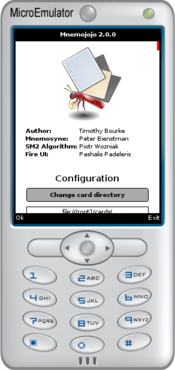
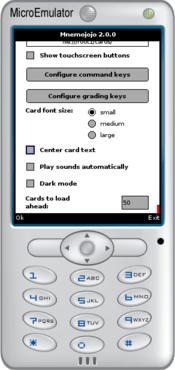
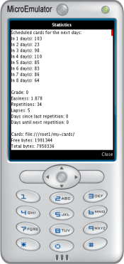

Mnemojojo allows cards from Mnemosyne (a spaced-repetition flash-card
program) to be reviewed on most mobile phones that support Java (J2ME).
Mnemojojo does not replace Mnemosyne: cards are still added, edited, and
deleted using a desktop or laptop computer.
Rather, cards for several days are exported using the
Mnemogogo plugin and then transferred to a mobile
phone where they can be reviewed on the go.
When those cards have been reviewed, they are imported back into Mnemosyne,
and more cards may be exported.
Mnemojojo has a few limitations:
Cards cannot be edited (all editing is done through Mnemosyne).
The user interface is only available in English.
But many advantages:
support for HTML Markup,
support for Images including LaTeX markup (images are optimized for
viewing on a phone),
support for sound (requires appropriate decoders on phone),
support for ‘map overlaying’,
statistics are still be contributed to the Mnemosyne project,
your cards are retained and managed in Mnemosyne,
the scheduling and grading algorithms are ported directly from
Mnemosyne
the basic library has been tested and debugged over several months,
and,
the system does not require an internet connection.
Mnemojojo requires both the Mnemosyne application and the Mnemogogo plugin.
They are both freely available for Windows, Mac, and Linux:
Care has been taken in the design and implementation of this software,
and I now use it daily, but there may still be bugs.
You use the
software at your own risk and without warranty!
Mnemojojo is completely free.
You do not have to pay anything to use it or to have the source code.
But, you are also welcome to send me a tip if you find the software useful!
The screen shots were produced using the open-source
MicroEmulator software.
Supported devices
Several devices are known to work:
Devices known to work
BlackBerry Curve 8300 (with OS v4.5.0.110)
Works perfectly (the j2me build has security prompts, but the
BlackBerry-specific build shouln't).
BlackBerry Storm 9530
Works perfectly (the security prompts can be
disabled
if necessary, but the BlackBerry-specific build shouldn't have any).
BlackBerry Bold 9700
The BlackBerry-specific build works well, although the
configuration screen cannot be swipe scrolled.
BlackBerry Torch 9800
The BlackBerry-specific build works well, although the
configuration screen cannot be swipe scrolled.
HTC Touch HD (Blackstone WM 6.1)
Works perfectly
HTC Windows Mobile 6 + Esmertec Jbed
Java MIDlet Manager
Does not load with the default JVM, but works with the Esmertec
JVM.
LG KP501
Works perfectly (but with security prompts)
M002L
Works perfectly
Motorola A1200
Works perfectly (security prompts can be
disabled).
Nokia 6121
Works perfectly (but with security prompts)
Nokia 6210 classic
Works perfectly (but with security prompts)
Nokia 6300
Works perfectly (but with security prompts)
Nokia C1-02 (Series 40, 6th edition)
Works perfectly (security prompts can be disabled).
Nokia C5
Works (but with security prompts)
Nokia E52
Works (but with security prompts;
possible unconfirmed problem with sound; may need to reduce the
number of cards loaded at once)
Nokia E61
Works perfectly (but with security prompts)
Nokia E71
Works perfectly (but with security prompts)
Nokia N8
Works with touch screen (the configure keys feature crashes)
Nokia E90
Works perfectly (but with security prompts)
Nokia N95
Works perfectly (but with security prompts)
Nokia N97 Mini
Works perfectly
Nokia 5800 (Express Music)
Works perfectly (better handling of security prompts)
Nokia X2-00
Works (only one security prompt at startup)
Palm TX
Works perfectly (requires IBM WebSphere Micro Environment Java
Virtual Machine 5.7.2)
Samsung Wave GT-S8500
Works perfectly (one-off security prompt on startup; need onscreen keys to scroll cards)
Samsung Wave II GT-S8530
Works perfectly.
Samsung SGH-i780
Works perfectly (but with security prompts)
Sony Ericsson W580i
Works perfectly
Sony Ericsson W595s
Works perfectly (can be set to trusted mode)
Sony Ericsson K750/K750(i)
Works perfectly (but with security prompts)
Sony Ericsson W760i
Works perfectly
Sony Ericsson W800i
Works perfectly (but with security prompts)
Sony Ericsson K850i
Works perfectly (One security prompt at startup, the font can
be configured.)
Toshiba g900 (with Esmertec java emulator)
Works (but with security prompts and a small font)
Mnemojojo loads statistics, card text, and images from the memory of a
mobile phone and its connected memory cards.
On some devices each access generates an annoying security confirmation
message.
Several confirmations are required when starting, confirmations are then
needed every fifty cards or so, for each image, and when quitting.
If security confirmations cannot be disabled on your phone please complain
to the manufacturer (not to me)!
For the latest Nokia phones (e.g. 5800, E75), at least, Aleksi Uotila says
that this issue has been fixed.
Windows Mobile users: (especially HTC phones) Apparently,
the default JVM will not load Mnemojojo.
Many people have, however, reported success using the Esmertec JVM,
where it should also be possible to disable
security prompts.
Devices with known problems
LG GS390 Prime (and GS290)
Non-signed apps cannot access the SD card using JSR-75.
LG Rumor Touch
Crashes, freezes the phone, or restarts the phone when writing the
configuration file or statistics.
Motorola i290
Needs compilation in Motorola SDK to install, even then throws
an exception on startup.
Nokia 5130c
Runs but terminates quickly with an OutOfMemory exception.
Nokia 6303i
Fails on startup with Class Not Found /path/FireMidlet.
The latest version of Mnemojojo may work on this phone; please let me
know either way.
Philips 892
Does not support JSR-75. Mnemojojo starts but the search for cards
never terminates.
If your phone is not on either of these lists, please try Mnemojojo and let me know how it goes.
Thanks to everyone who already reported issues or success.
Installation
Mnemojojo requires MIDP 2.0, CLDC 1.1, JSR-75 and usually 0.5 to 1.0
megabytes of heap space.
There are two builds: a jar file that should work on most
Java (J2ME) devices, and a cod file for BlackBerry devices.
The BlackBerry build is signed and supports the BlackBerry command
buttons.
Installing Java applications on BlackBerry phones seems to be a bit tricky
sometimes.
There are three approaches you might try:
Start the BlackBerry Application Loader Tool and
then select the Mnemododo.alx file.
Installation by email
If you are still having trouble, you could try installing the standard
mnemojojo.jar file, either directly from
here, or by
first emailing it to your BlackBerry, and then saving it locally, before
opening it with Files (thanks to Galal Gough for this tip).
Configuration
Follow the Mnemogogo instructions to
install and
configure Mnemogogo on
your PC, and to export some cards.
Start Mnemojojo on your phone. The about screen shown in
Figure 3 should appear.

(a) Top part: logo and credits

(b) Bottom part: configuration options
Figure 3: The Mnemojojo about screen.
Press up and down to scroll through the various configuration options
(or drag the scrollbar on touchscreen devices).
Press select (or tap a control) to change an option.
Option values are remembered across invocations, but forgotten after
reinstallation.
There are nine options:
Change card directory
The first time you use Mnemojojo, you must indicate the directory that
contains the exported cards.
Mnemojojo checks for a directories called cards at the
top-level of each drive.
It also provides options to automatically search through all
subdirectories, which may generate annoying security
alerts, or to manually browse for a directory.
The path, once chosen, will be remembered automatically the next time
Mnemojojo is started.
Show touchscreen buttons
On devices with keypads, cards are graded by pressing the appropriate
number key.
Some touchscreen devices, however, do not have a keypad.
Instead Mnemojojo can display on-screen buttons for showing card
answers and grading cards.
See Figures 4(b) and 5(b)
for examples.
Configure command keys
These keys are used to choose from the options presented at the
bottom of the screen; for example, in Figure 3,
between Ok and Exit.
Mnemojojo usually configures them correctly automatically (thanks to
the underlying UI toolkit), but on some devices they must be set
manually. (This option is not present on the BlackBerry-specific build,
since the built-in keys should work automatically.)
Configure grading keys
These keys are used to grade cards (0 to
5), to skip cards (*), and to show card
statistics (#).
On some devices, like the Nokia E61i, it is necessary to press a
‘shift’ key before pressing a number key.
As this quickly becomes tedious, Mnemojojo allows the grading keys
to be remapped if necessary.
Card font size
The size of the font used for displaying cards can be changed to
suit your mobile and eyesight.
Center card text
Text and graphics are left-aligned by default.
If this option is selected, they will be centered on the screen, but
be aware centering does not currently work properly with all combinations
of bold, italic, or underlined text due to a limitation
in the underlying library.
Play sounds automatically
By default, any sounds on a card are played automatically when the
card is displayed.
When this box is unticked, sounds are only played when the replay
button (either on screen or on the keypad) is pressed.
Dark mode
Uses darker colours for the background and buttons.
Useful for reviewing cards in the dark, and, potentially, for
conserving battery power.
Cards to load ahead
The text of exported cards are stored in a single file.
This option determines how many of those cards should be read into
memory simultaneously.
If too many cards are loaded, your mobile may not have enough free
memory to display images, or even, to run Mnemojojo at all.
If too few cards are loaded at a time, you may be bothered by more
security prompts, or long pauses between cards while the file is
rescanned.
Thus, this number should only be reduced if your phone is running
out of memory or not displaying images.
It can be increased if your phone makes more memory available to
Java applications.
After installing Mnemojojo, you must select Change card
directory to detect and choose the location of the exported
cards.
Daily Use
If necessary, start Mnemojojo and, at the about screen, choose a card
directory.
Then press Ok.
The question screen for a card is shown first, as in Figures 4(a) and (b).
The category of the current card is shown in the top-left corner, and the
number of scheduled cards remaining is shown in the top-right corner.
The * key can be pressed to skip a card.
Pressing one of the 0–5 keys, or optionally
touching the on-screen buttons will grade the card.
The question screen of the next card is then presented.
When the number of exported cards runs out, or you want to review cards
with Mnemosyne again, quit Mnemojojo and import the updated statistics as
described elsewhere.
Note:
The # key can be pressed at any time to show a statistics
screen similar to the example in Figure 6.

Figure 6: The Mnemojojo statistics screen.
Several details are shown:
The number of days worth of exported cards that remain until another
export from Mnemosyne is required, and the number of cards scheduled for
each day.
The statistics for the current card.
The path to the cards that are currently being displayed.
The numbers of free and total bytes available to Mnemojojo.